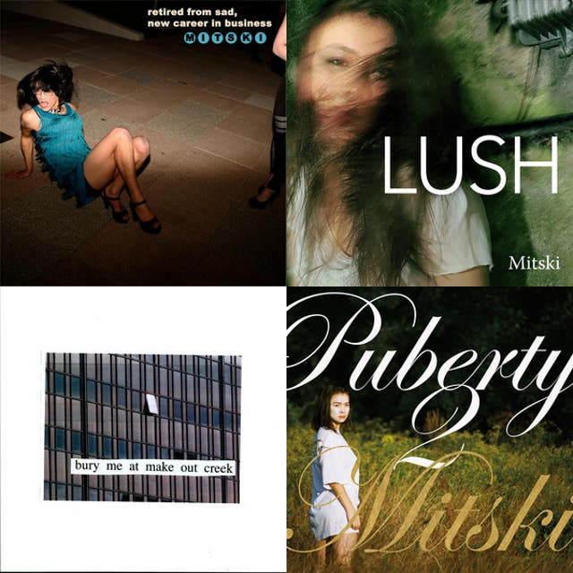

Mitski Miyawaki (27 de septiembre de 1990) es una cantante y compositora estadounidense de origen japonés. Nació como Mitsuki Laycock en la prefectura de Mie, Japón.
Estudió música en el Conservatorio Suny Purchase College, en Nueva York. Empezó a componer sus propias canciones a los dieciocho años y, mientras estudiaba, grabó sus dos primeros álbumes, basados en su voz y el piano, Lush (2012) y Retired from Sad, New Career in Business (2013). Tras graduarse fue vocalista de una banda de metal progresivo, Voice Coils. El grupo se disolvió, no obstante, tras una breve andadura, y comenzó a trabajar en un tercer álbum de estudio, Bury Me at Makeout Creek (2014), con el que comenzó a llamar la atención. Su siguiente largo, Puberty 2 (2016), se ganó los elogios generalizados de la crítica musical, y su single Your Best American Girl sería considerado una de las mejores canciones de ese año. En 2018, se anunció su quinto álbum, Be the Cowboy. De nuevo gozó de una aclamación general, y nombrado como mejor disco del año por publicaciones especializadas de prestigio como Consequence of Sound y Pitchfork. No obstante, tras la gira de presentación del disco, que se cerró con un concierto en Central Park, Mitski anunció su retirada temporal del mundo de la música. En 2020, lanzó, para su regreso, la canción Cop Car. Explicó que trabajaba en dos proyectos. En un caso, compuso la banda sonora de una novela gráfica, This Is Where We Fall; y en el segundo, un nuevo álbum, Lauren Hell, que tuvo como primer single, Working for the Knife.
